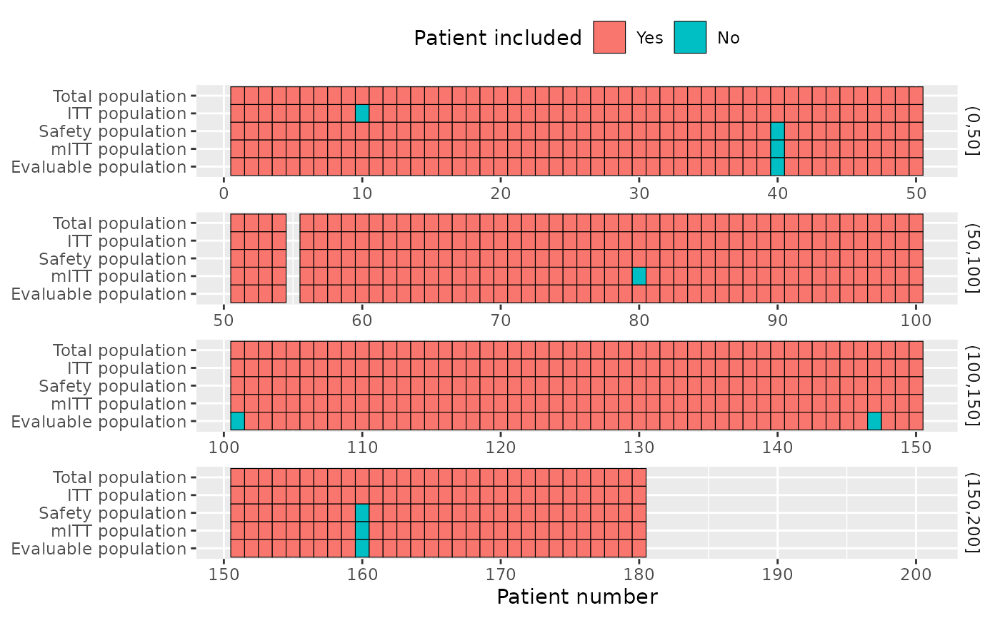
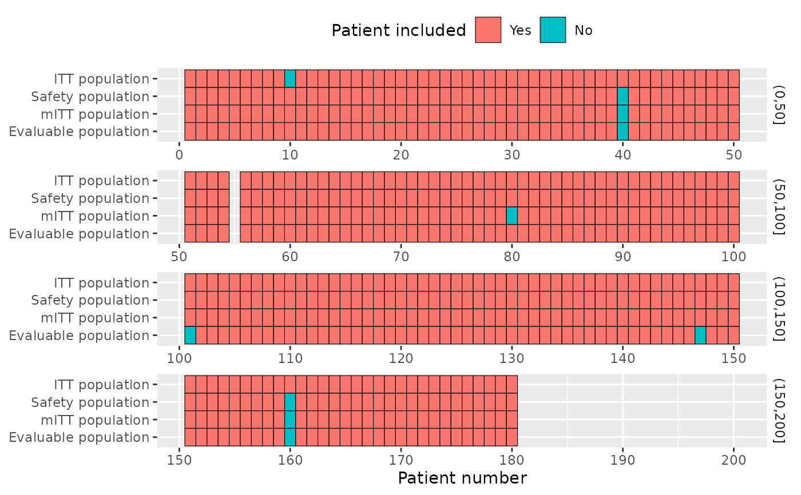
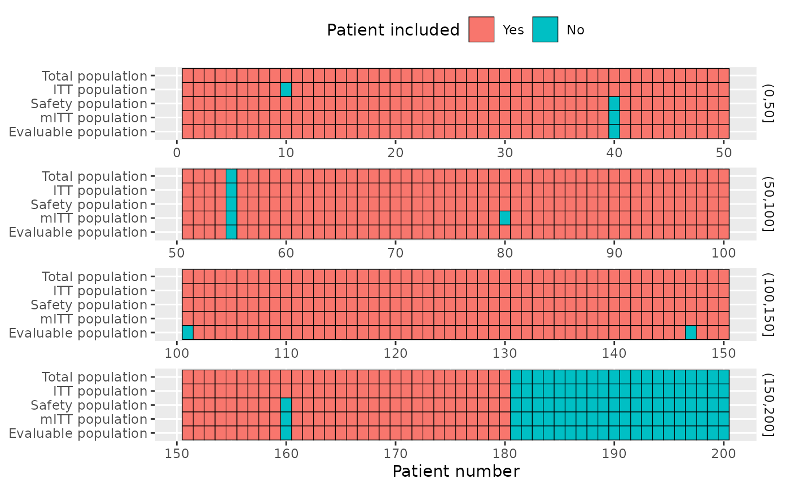

In a RCT, you usually have several populations of analysis, and this function allow to show which patient is in which population graphically.
Examples
#in real word code, use filter and pull to get these vectors
pop_total = c(1:180) %>% setdiff(55) #screen failure, no patient 55
pop_itt = pop_total %>% setdiff(10) #patient 10 has had the wrong treatment
pop_safety = pop_total %>% setdiff(c(40,160)) #patients 40 and 160 didn't receive any treatment
pop_m_itt = pop_total %>% setdiff(c(40,160,80)) #patient 80 had a wrong inclusion criterion
pop_evaluable = pop_total %>% setdiff(c(40,160,101,147,186)) #patients with no recist evaluation
l = list(
"Total population"=pop_total,
"ITT population"=pop_itt,
"Safety population"=pop_safety,
"mITT population"=pop_m_itt,
"Evaluable population"=pop_evaluable
)
edc_population_plot(l)

edc_population_plot(l[-1], ref=pop_total)

edc_population_plot(l, ref=1:200)

edc_population_plot(l, id_per_row=60)